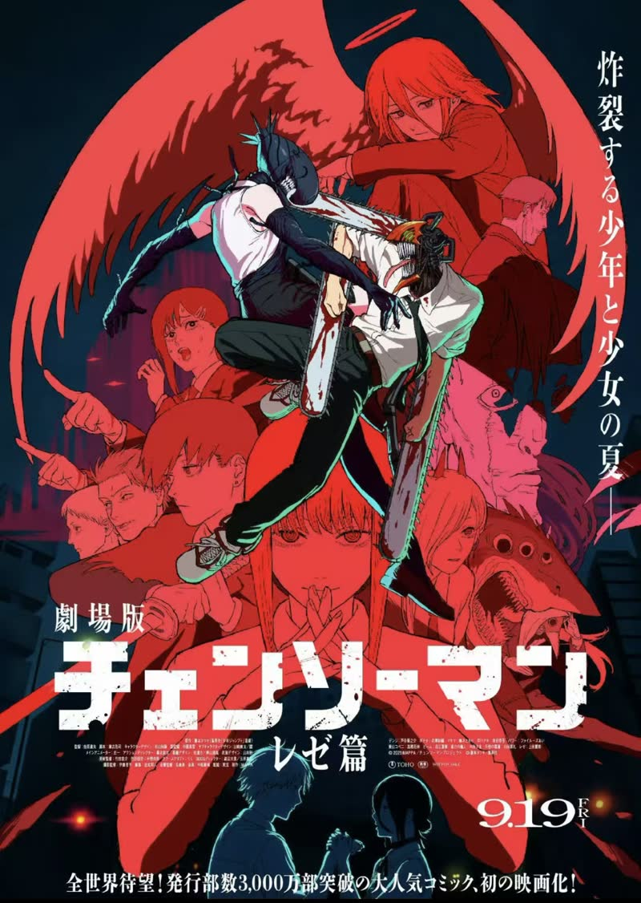
01 · 第一部一起看的电影
电锯人—蕾赛篇
阅读评语其实按照时间来说，这才是我们一起看的第一部电影。
我没想到你会和我一起看，因为我只是上军事理论课很无聊而已。现在回想起来，当时在法新大类的时间真是过得很开心，现在发现也太晚了吧！！
A film diary with you
Scroll to explore
① 点击阅读评语即可窥探 mwzx 的专属锐评
② 有的图片可以点击切换（其实最多也就两张。。）
③ 标注了🎵 专属配乐的是 mwzx 专门找的很合适的配乐！

其实按照时间来说，这才是我们一起看的第一部电影。
我没想到你会和我一起看，因为我只是上军事理论课很无聊而已。现在回想起来，当时在法新大类的时间真是过得很开心，现在发现也太晚了吧！！
寝室一起出去看的第一部电影吧？
我记得当时你还发了朋友圈，但是我忘记了文案是不是 love you partner，我还在寻思这 partner 是谁……
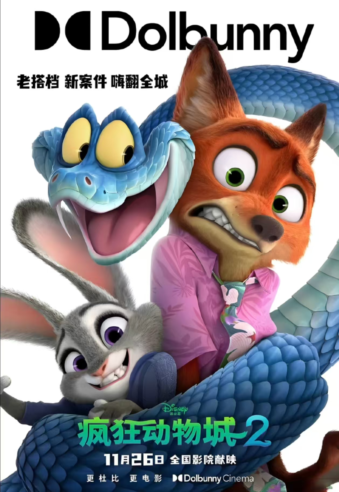
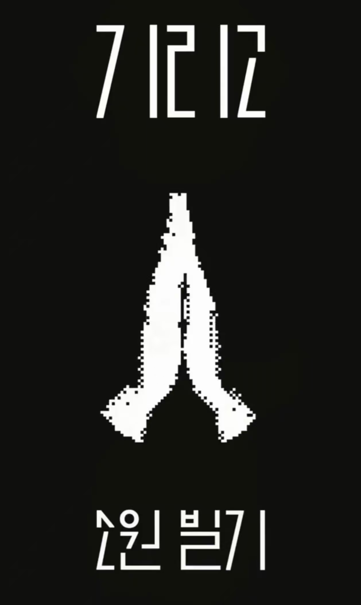
我们一起看完的第一部韩剧，或者说，第一部剧！恭喜！撒花！🎉
棒子一直给我一种抄什么都抄不明白的感觉，剧情有些高开低走，但是总体还是给到一个顶级！Netflix 诚不欺我。
其实我很害怕自己推荐的电影或者剧不好看，带着你看电影的时候，我比导演和编剧更怕观众不喜欢。
作为伪纪录片还是很不错，确实比昆池岩还好看。前半截没什么恐怖的点，但是后面的剧情直接拯救了这个系列，我记得你对这一部的评价也很高，我很喜欢男主说开场白，感觉很 hot blood！
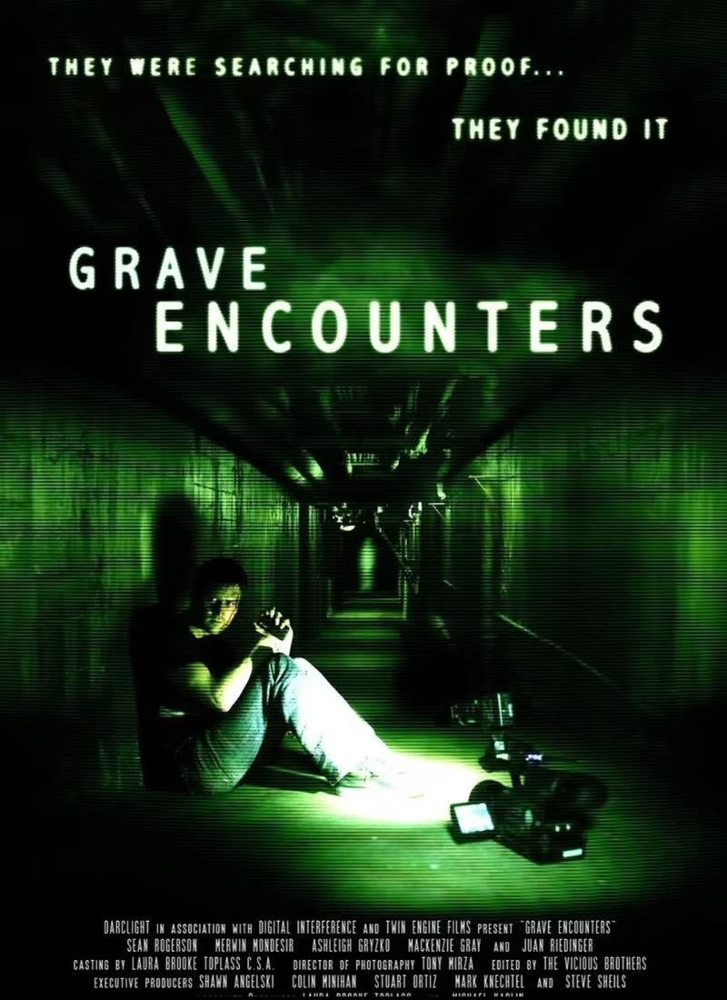
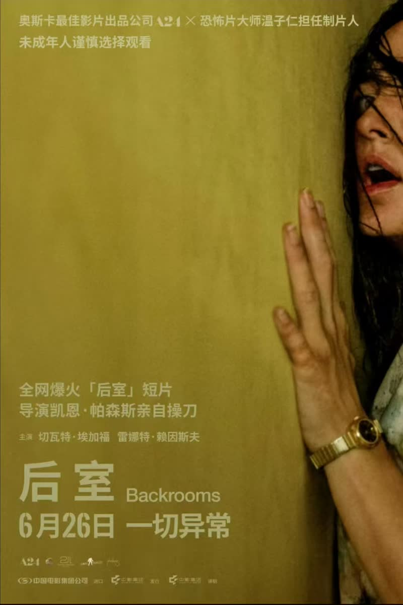
虽然剧情有些没交代清楚，但是整个氛围很棒！很后室！！而且！喜欢窝在你怀里，虽然在电影院亲亲我会很不好意思！
呃啊！突脸还是很害怕，很典的日本鬼片！
我们还可以一起看《午夜凶铃》——我真的很想回顾一下！因为我上一次看是十五年前……
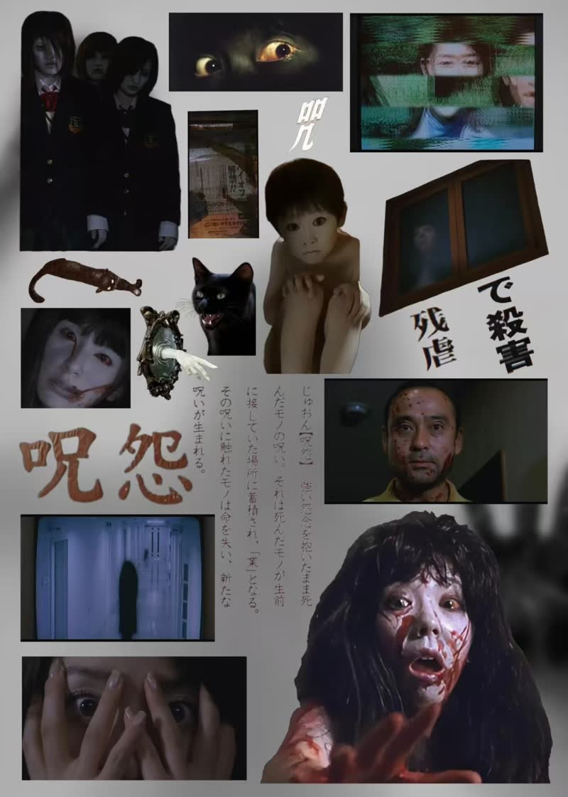
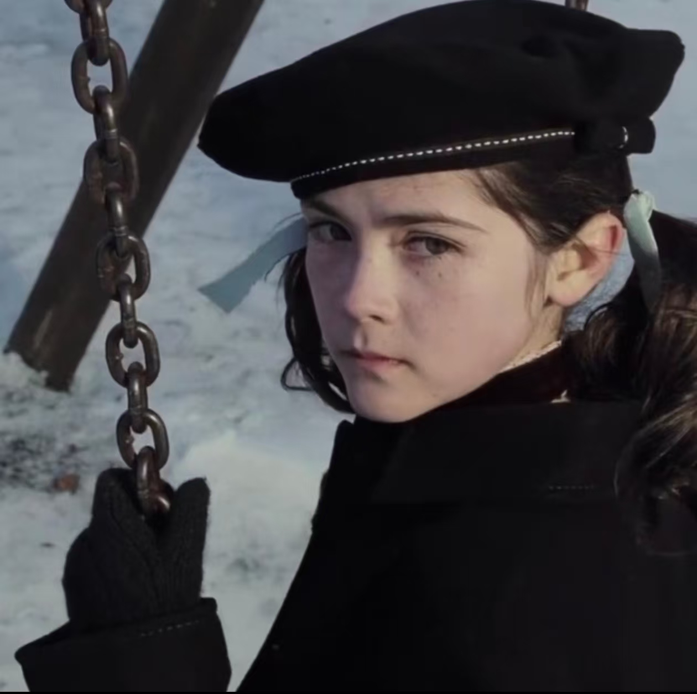
小时候很多细节没品味出来，现在虽然觉得没有以前恐怖，但更能理解剧情和伏笔。
特别是关于看牙医那一段，结局很惊险，最后也收到了你的好评！
铁拳是第二部我们一起看完的韩剧，而且是在期末周之前花了两三天就追完了。
这几天似乎过得特别幸福，因为总是有盼头——盼着能搬着小板凳坐在你旁边，也盼着能快点知道后面发生的故事，还盼着小胖快点和任晗琳在一起……
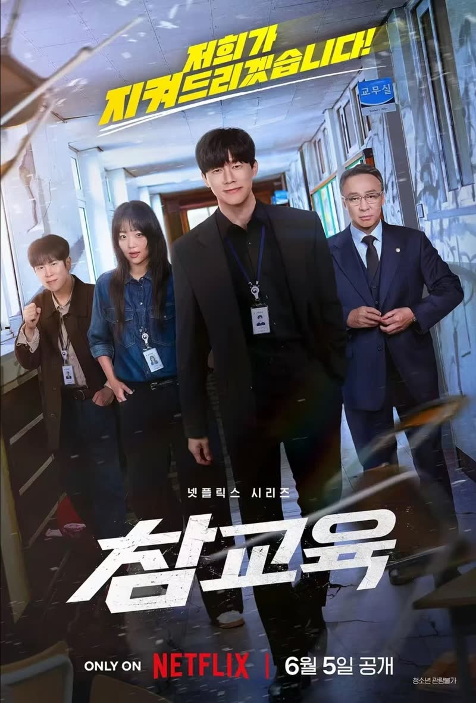
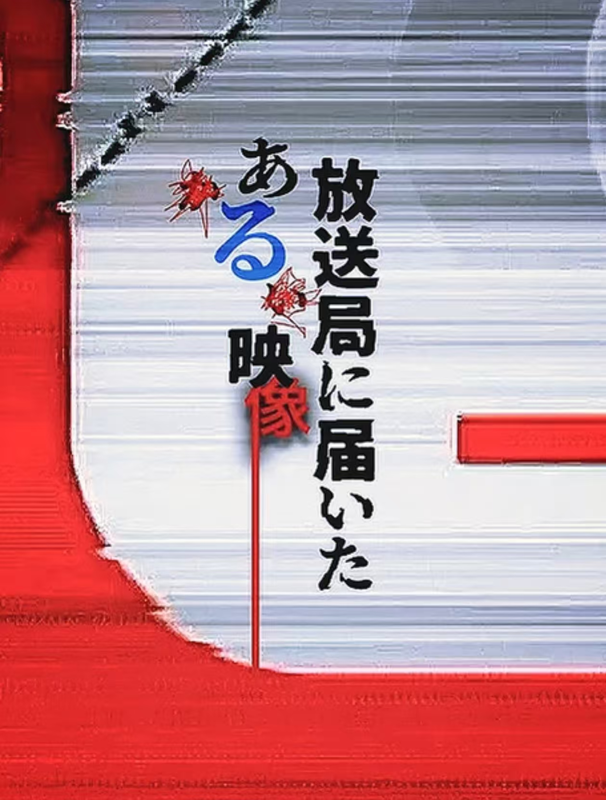
算是我最喜欢的一部吧！里面的场景、声音、拍摄手法我都能给到一个夯！
所以——成为完整的人类吧！！
这也是寝室一起看的恐怖片！记得当时我们靠得很紧，每个人都看得很投入，这样的时刻再也不会有了吧。后来，这也是一个冠冕堂皇的理由让我们名正言顺睡在了一起。
是我觉得完全没有烂尾的一部！
没想到能比 1 拍得更好，特别是延续了第一部的设定，包括男主和房子。嗯嗯😆
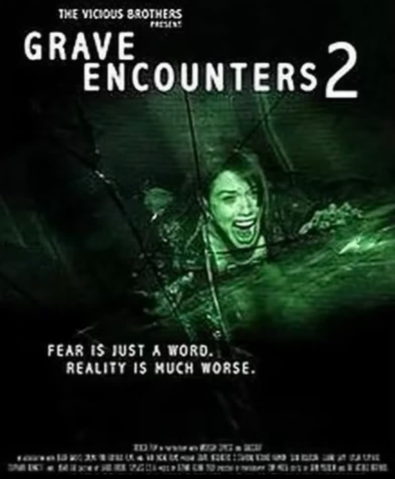
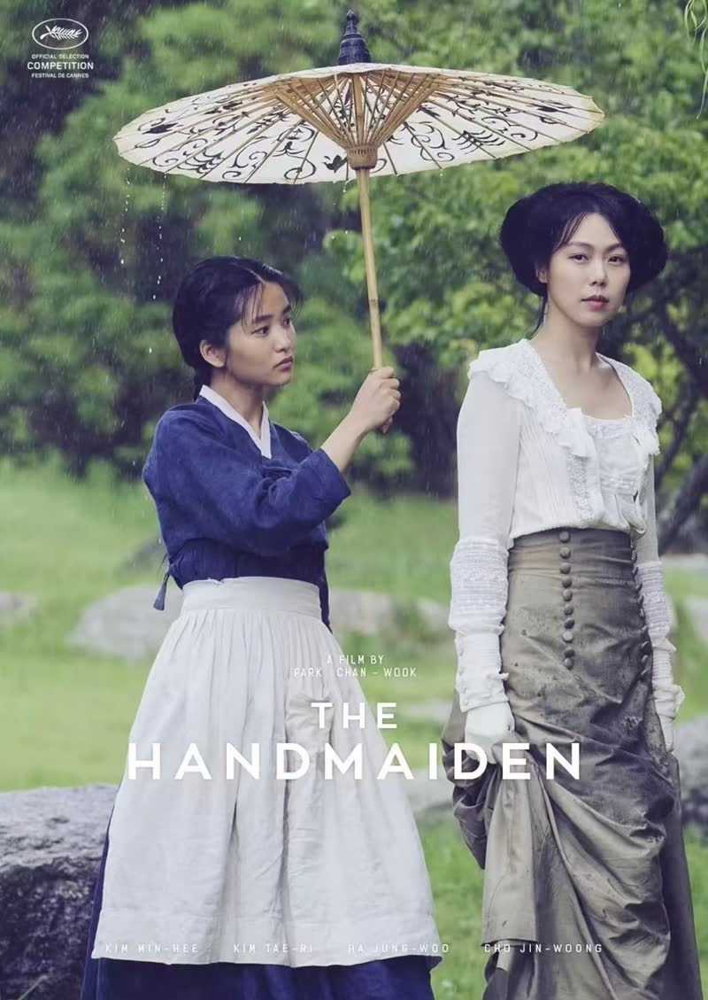
小时候看觉得剧情很好看，反转再反转。
脑子里一直有一个画面：小姐带着淑姬在山坡上奔跑，享无边的自由，和共同的呼吸。不过我一直以为这是电影最后一幕，再次观看才发现是记错了。
我不知道你那个问题——为什么要加入一个讨人厌的男主——解决了没有，但我记得那天晚上和你睡在一起，一直被摇摇晃晃的幸福裹挟着，很轻易地就堕入梦境。
我一直很喜欢的一部剧，虽然你给我拍照说你在看的时候，我没有第一时间认出来。
我初中的时候，因为没时间看电影，选择了看书，边看边用 mp3 听 Mystery of Love——意大利，你真是欠我一个柠檬味的夏天……
电影以前也是看得稀里糊涂，这次虽是断断续续看的，心境却完全不一样。
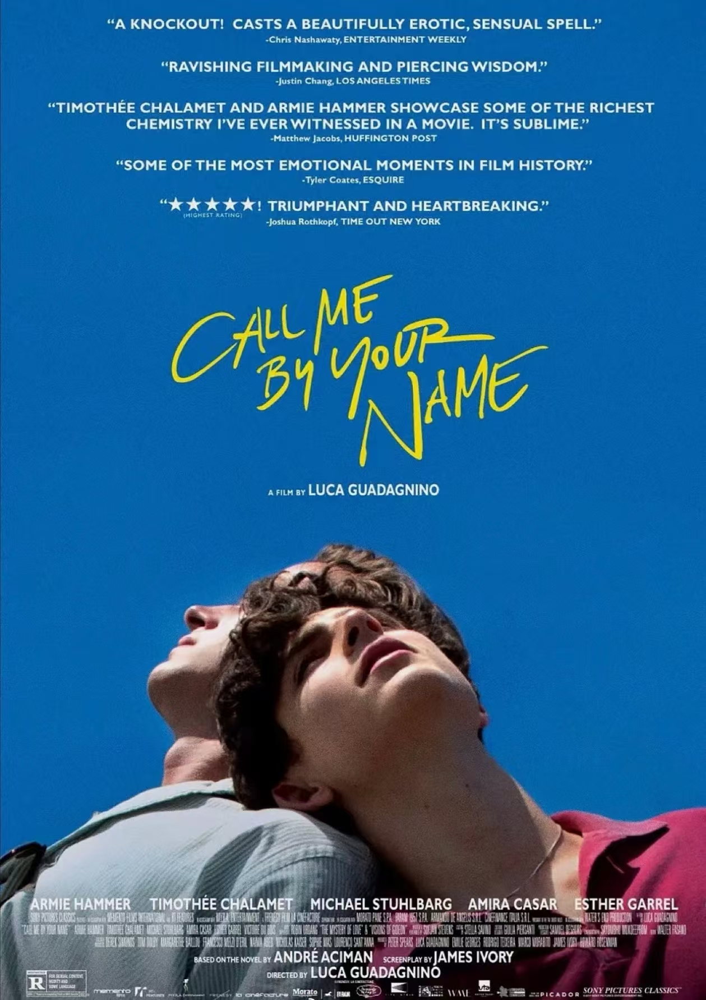
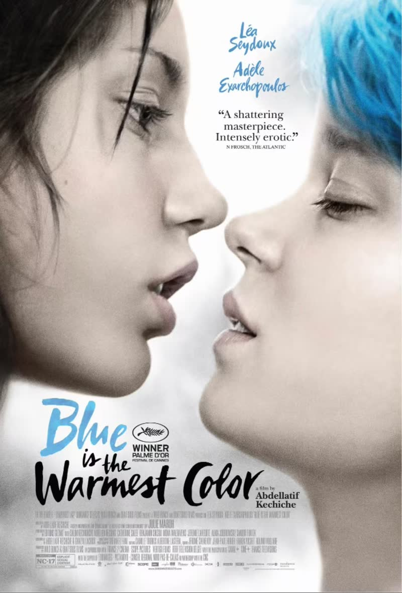
当年涉猎了不少 les 片，不过都是走马观花，这算是我印象里看得比较正式的。
这部电影的英文名叫 Blue is the Warmest Colour——蓝色是最温暖的颜色。也是我最喜欢的颜色。
因为剧情太现实，看的时候，不禁让人有些唏嘘，好奇着阿黛尔和艾玛的结局，同时我也在好奇着我们的结局……
再次看还是很有感触，这部电影给我的感觉和其他的都不一样。
也许是因为麦和绢一来一回的旁白颇有默契，也许是因为有个把日本物哀美学诠释得差不多的结局，也许是因为那么般配的两个人居然都走不到一起……这不禁让我们追问——到底要怎样般配的两个人才能走向理想的爱。
哦！还把小哭包看哭了来着，还想藏着掖着！萌萌萌 💕
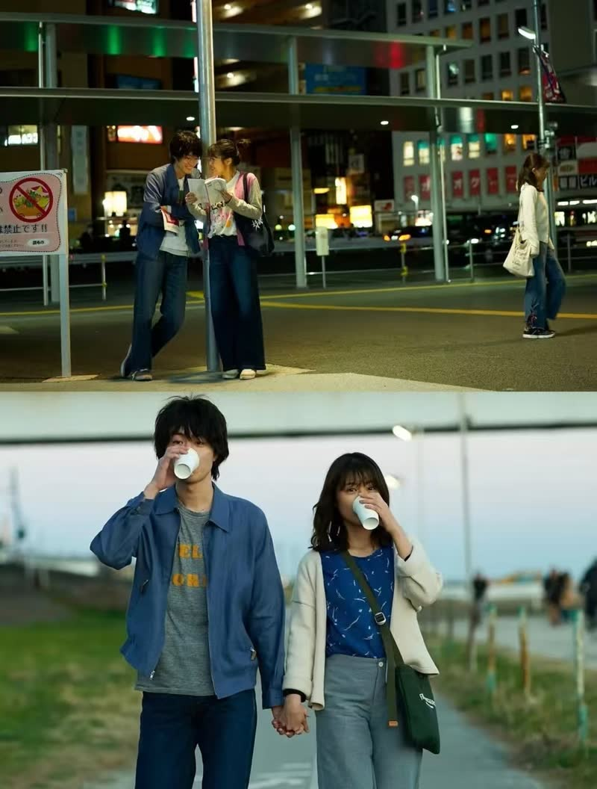
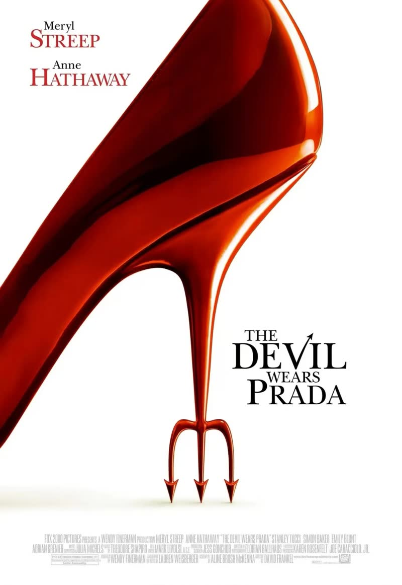
好像没看到结局？或者我记忆不太深刻了。
我不介意再看一次。
没想到你也会喜欢这类！
新海诚虽然一直因为这一部电影被骂江郎才尽，但是我私自是很喜欢这一部的。铃芽和草太一起杀蚯厄的场景配上主题曲，总给我一种很神圣的感觉。小猫咪很萌 🐱
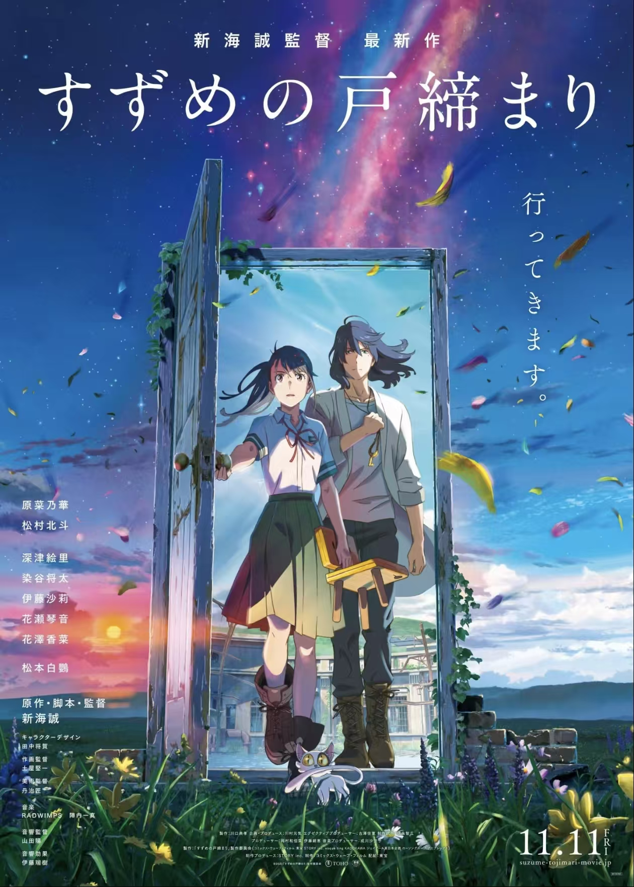
亲爱的小宝宝：
真没想到这个学期，能和你看这么多电影（其实我还是感觉很少！没看够），我本身是一个很爱看电影的人，有时候现实中有很多很烦恼的事情，我就会选择看一部电影一部番来逃避一下（当然很多也是单纯因为喜欢或者无聊）。其实我也喜欢看的时候和身边的人偶尔聊聊天，好像我们漂浮在同一片海洋上，享受着同一片氧气，感受着同一片波浪。当阳光暖暖洋洋划过你我的手掌就像剧里的台词一样，这时，我感受到世界被排除在外，留下我们两个两耳不闻窗外事的“倒霉蛋”（只是为了押韵而已😉）
好吧回归正题，我做这个网页真是花了不少 token，不过应该可以永久保存了，以后看了更多的作品我会集中加入这个网页！把它做成我们一个专属的存档！嗯嗯嗯嗯嗯，好吧好吧好吧好吧好吧好吧这个暂时写到这里！
—— 你的小宝宝